De ejecutores manuales a arquitectos y estrategas del territorio: tres soluciones prácticas para los municipios de Guanajuato.
¿Cómo dejamos de perder horas en procesos mecánicos para concentrarnos en resolver problemas reales?
Horas atrapados redibujando planos, limpiando tablas de Excel y redactando fichas técnicas burocráticas bajo presión.
La IA Generativa actúa como un copiloto técnico: redacta borradores, formula proyectos y ejecuta mapas en minutos.
1. Renders urbanos antes/después.
2. Asesor de proyectos PRESUME.
3. Mapeo en Colab sin programar.
Levantemos la mano: ¿cuáles de estas forman parte de tu jornada?
Falta de banquetas y áreas verdes • Inundaciones recurrentes • Crecimiento desordenado de periferias • Falta de transporte público • Dificultad para justificar presupuestos ante el Cabildo • Proyectos rechazados
Los tres ejemplos de hoy están diseñados directamente para atender estos desafíos.
Una herramienta para agilizar el trabajo diario, no para reemplazarnos.
De una fotografía de calle deteriorada a un render fotorrealista de diseño sustentable.
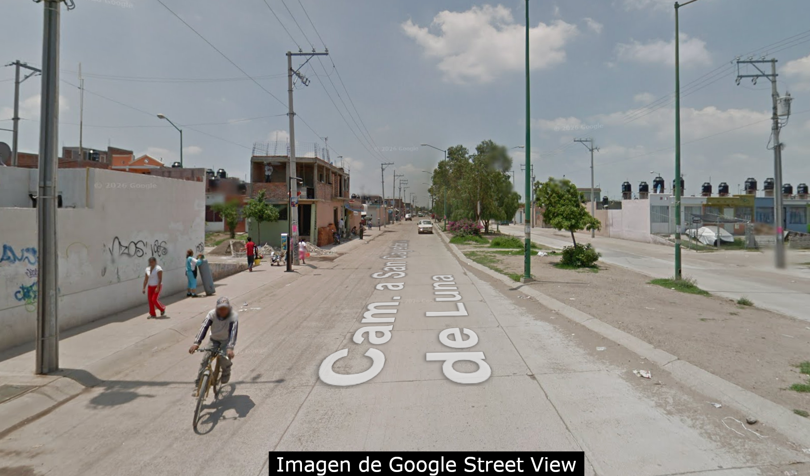
Foto original: Calle sin banquetas y ciclistas desprotegidos
Separar el análisis del dibujo evita que la IA invente las fachadas o borre el entorno.
Al obligar a la IA a enumerar los elementos invariantes (postes, casas, comercio barrial, personas), "fijamos su memoria" para que no deforme la calle en el render.
La IA propone un urbanismo genérico; el técnico municipal aplica el criterio local.
Si la calle mide 6 metros, no cabe una ciclovía confinada; es mejor priorizar banquetas amplias.
Rechazar pinos o césped europeo; exigir mezquites, huizaches o encinos de bajo consumo de agua.
Cuidar los accesos de los comercios y casas de los vecinos para evitar conflictos sociales.
Ajuste en una sola línea antes de renderizar:
[Ajuste: La ciclovía debe ser un carril pintado de verde; prioriza banquetas con rampas y árboles de sombra nativos]
Intervención rigurosa en el derecho de vía respetando la identidad del sitio.
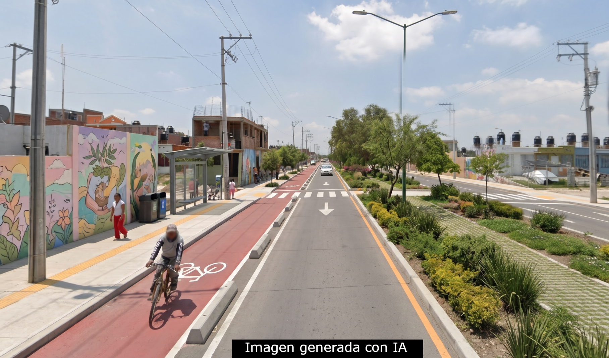
Resultado: Banquetas accesibles, ciclovía y vegetación con las mismas casas
Facilitar acuerdos con la comunidad y justificar la obra ante el Cabildo.
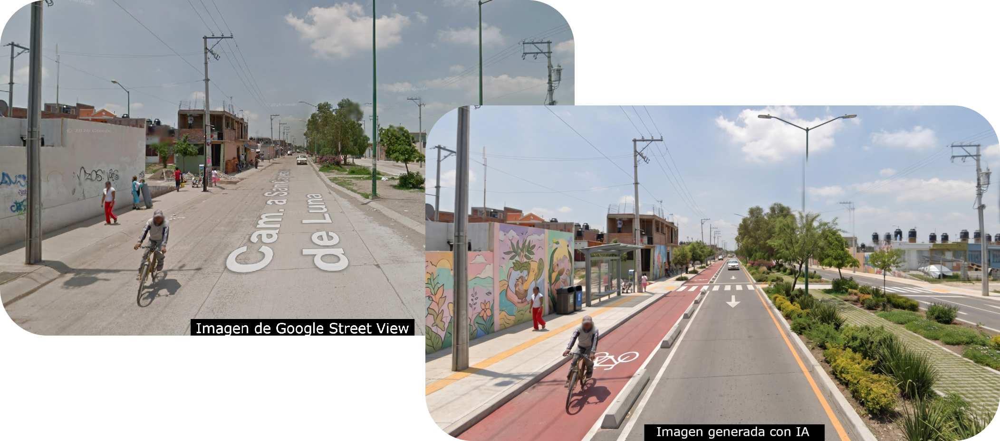
Formular proyectos municipales con valor social y sostenibilidad territorial.
Proyectos redactados como compras de insumos: "Pavimentar 500 metros" o "Comprar 20 postes" sin justificación social.
Carpetas rechazadas en validación estatal/federal o proyectos que se inundan al año siguiente por falta de visión integral.
Un asesor socrático de IA que te acompaña paso a paso bajo la metodología PRESUME y la Cadena de Valor Público.
Un marco integral para no solucionar un problema creando otro.
| Letra | Qué evalúa en el municipio | Pregunta clave |
|---|---|---|
| P Patrimonio | Identidad, arquitectura tradicional e imagen urbana. | ¿Respeta la historia y el carácter del barrio? |
| R Riesgos | Inundaciones, fallas, deslaves y atlas municipal. | ¿Previene riesgos o construye en zona vulnerable? |
| E Ecosistema | Arbolado nativo, confort térmico e infiltración pluvial. | ¿Reduce las islas de calor y ahorra agua? |
| S Servicios | Brechas de agua, drenaje, luz y parques vivos. | ¿Cierra rezagos básicos y genera convivencia? |
| U Uso Suelo | Aprovechar baldíos intraurbanos y frenar dispersión. | ¿Consolida la ciudad o encarece servicios? |
| M Movilidad | Peatones, personas mayores y transporte público. | ¿Conecta equipamientos a 15 min caminando? |
| E Economía | Comercio local y presupuesto de mantenimiento anual. | ¿Cómo se operará y mantendrá año con año? |
La IA pregunta poco a poco (máximo 2 preguntas por turno) para no abrumar.
Si el usuario presiona Enter sin escribir su proyecto, la IA no se rompe: le responde amablemente pidiéndole que le platique su idea básica.
Plantilla completa disponible en el portal web de la clase.
Cómo cambia la justificación de una misma obra de pavimentación.
"Pavimentación de 400 metros de calle con concreto hidráulico de 15 cm de espesor en la Col. Santa Fe."
❌ Solo describe la compra de material.
❌ No demuestra beneficio social.
❌ No prevé escurrimientos ni arbolado.
Problemática: 120 familias y 300 estudiantes sufren encharcamientos, caídas de adultos mayores y falta de patrullaje por fango.
Producto: Calle completa con banquetas accesibles, luminarias solares y 45 árboles de sombra nativos.
Impacto: Reducción del 60% en tiempos de traslado a la escuela y cero inundaciones pluviales.
Análisis geoespacial en la nube con Google Colab y Gemini (Low-Code / No-Code).
Fácil inicio, pero repetir clics manuales ante cada cambio de datos.
Replicable y ágil, pero con una curva de aprendizaje extensa.
El código lo escribe la IA con instrucciones en español cotidiano.
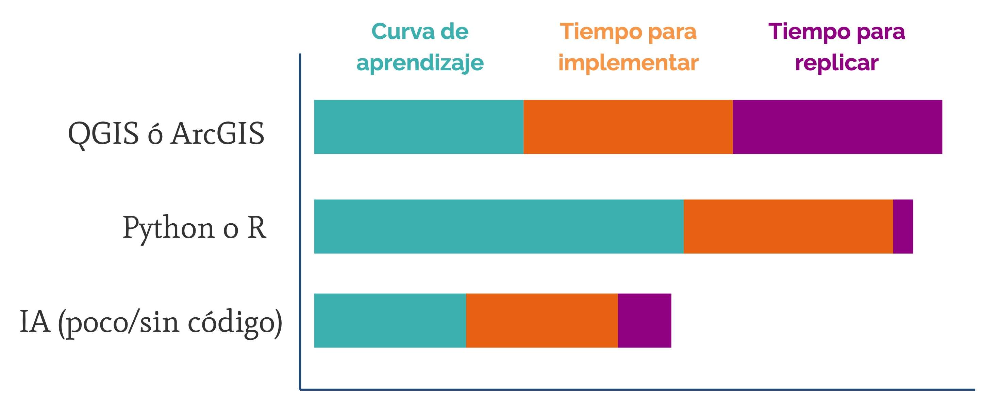
Un proceso ordenado, transparente y auditable para tu municipio.
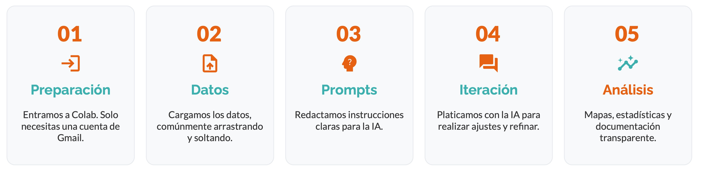
Entrar a colab.google.com con Gmail (cero instalaciones).
Arrastrar y soltar la capa GeoJSON a la carpeta.
Pedir el mapa o cálculo en español formal.
Refinar colores, leyendas y mapa base platicando.
Evidencia territorial y cifras duras para Cabildo.
colab.google.com con cuenta Gmail
Crear espacio de trabajo limpio
Clic en el ícono de carpeta a la izquierda
Soltar tijuana_mun_osm.geojson
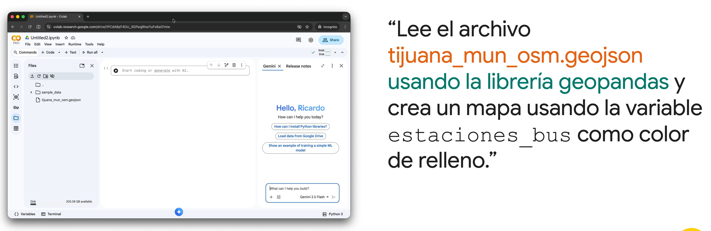
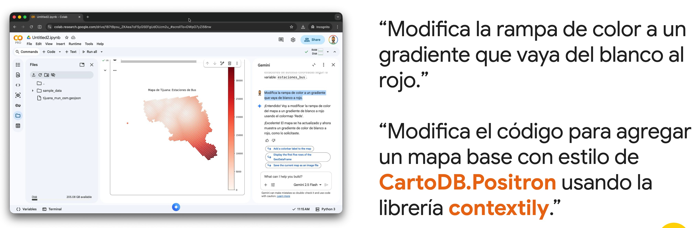
Refinar el mapa sin tocar ni una línea de programación.
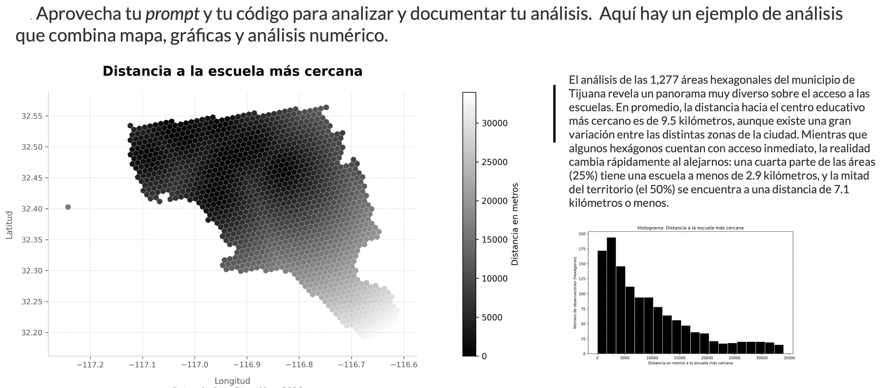
Resultado: Contexto urbano de calles integrado y escala cromática clara
El mapa es solo el medio; el fin es sustentar la inversión municipal.
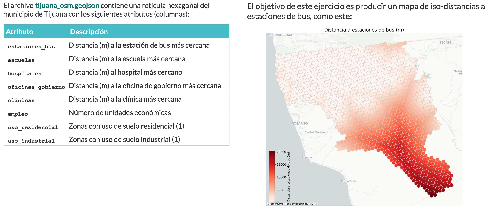
Combinar múltiples variables espaciales en un "Índice de Aislamiento".
Pide a la IA cruzar hospitales, escuelas y transporte estilo mapa de calor.
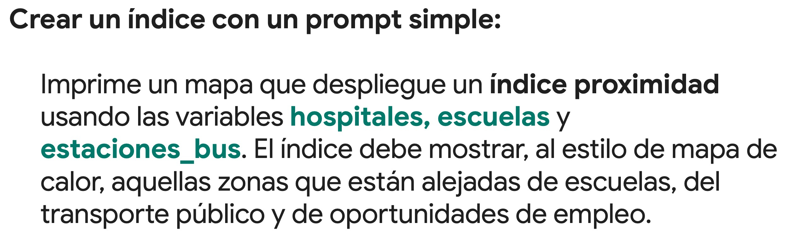
Normaliza variables con scikit-learn (MinMaxScaler) e invierte empleo.
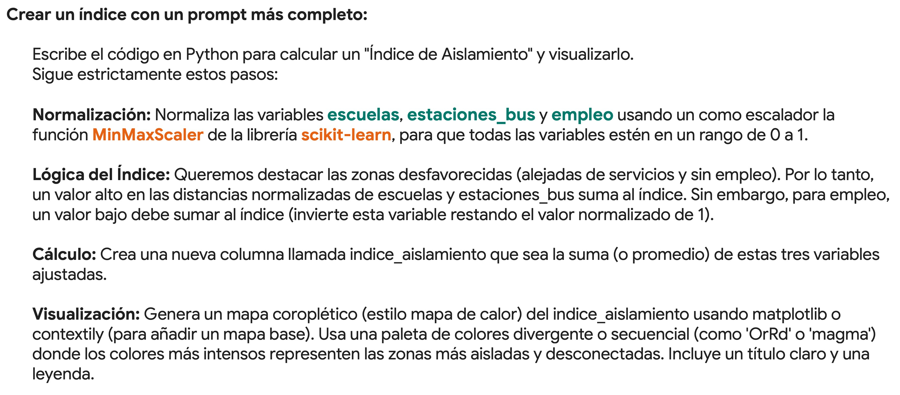
El código completo y la fórmula de normalización están disponibles en el portal web de práctica autónoma.
Cómo trabajar con IA de forma segura, ordenada y profesional.
Define siempre el rol técnico, la colonia de estudio y las normas o reglamentos aplicables antes de pedir resultados.
Retira folios catastrales sensibles, nombres de vecinos y expedientes en juicio antes de subir datos a cualquier plataforma.
Guarden en una carpeta compartida de la dirección los prompts que mejor resultado les dieron para que todo el equipo los aproveche.
Ningún algoritmo conoce los retos de tu municipio como tú y tu equipo.
Verificar antes de dictaminar y comunicar con total honestidad.
"Insumo técnico de apoyo elaborado con asistencia de Inteligencia Artificial y validado por la Dirección Municipal de Planeación."
En imágenes urbanas: Aclarar siempre que son propuestas conceptuales de diseño, no proyectos ejecutivos de obra civil.
Conectar lo aprendido con el problema más urgente de tu municipio.
Encuentras el formato listo para imprimir o resolver digitalmente en nuestro portal web.
Todos los prompts, datos e instrucciones disponibles para practicar a tu propio ritmo.
Botones directos para copiar los prompts de Calle Completa, PRESUME y Google Colab sin errores de tipeo.
Descarga directa de tijuana_mun_osm.geojson para hacer tus mapas en Colab hoy mismo.
Cálculo del Índice de Aislamiento Territorial combinando múltiples variables espaciales.
ricardoochoa.github.io/curso-ia/Escanea con tu celular
Acceso directo a la guía y prompts
"El futuro del territorio en Guanajuato se construye con criterio técnico, sensibilidad social y herramientas modernas que multiplican nuestro alcance."